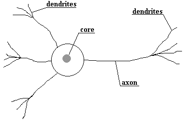
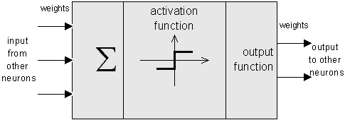
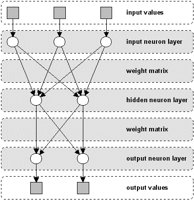

bottom of page
bottom of page
| bottom of page |
Types of neural nets |
| jump directly to |
To show where neural nets have their origin, let's have a look at the biological model: the human brain.
The biological model: The human brain
Below you see a sketch of such a neural cell, called a neuron:

As the figure indicates, a neuron consists of a core, dendrites for incoming information and an axon with dendrites
for outgoing information that is passed to connected neurons.
Information is transported between neurons in form of electrical stimulations along the dendrites.
Incoming informations that reach the neuron's dendrites is added up and then delivered along the neuron's axon
to the dendrites at its end, where the information is passed to other neurons if the stimulation has exceeded
a certain threshold.
In this case, the neuron is said to be activated.
If the incoming stimulation had been too low, the information will not be transported any further.
In this case, the neuron is said to be inhibited.
The connections between the neurons are adaptive, what means that the connection structure is changing dynamically. It is commonly acknowledged that the learning ability of the human brain is based on this adaptation.
 top of page top of page |
The components of a neural net
These facts lead to an idealized model for simulation purposes.
Like the human brain, a neural net also consists of neurons and connections between them.
The neurons are transporting incoming information on their outgoing connections to other neurons.
In neural net terms these connections are called weights.
The "electrical" information is simulated with specific values stored in those weights.
By simply changing these weight values the changing of the connection structure can also be simulated.
The following figure shows an idealized neuron of a neural net.

As you can see, an artificial neuron looks similar to a biological neural cell.
And it works in the same way.
Information (called the input) is sent to the neuron on its incoming weights.
This input is processed by a propagation function that adds up the values of all incoming weights.
The resulting value is compared with a certain threshold value
by the neuron's activation function.
If the input exceeds the threshold value, the neuron will be activated, otherwise it will be inhibited.
If activated, the neuron sends an output on its outgoing weights to all connected neurons and so on.
In a neural net, the neurons are grouped in layers, called neuron layers.
Usually each neuron of one layer is connected to all neurons of the preceding and the following layer
(except the input layer and the output layer of the net).
The information given to a neural net is propagated layer-by-layer from input layer to output layer through either
none, one or more hidden layers.
Depending on the learning algorithm, it is also possible that information is propagated backwards through the net.
The following figure shows a neural net with three neuron layers.

Note that this is not the general structure of a neural net.
For example, some neural net types have no hidden layers or the neurons in a layer are arranged as a matrix.
What's common to all neural net types is the presence of at least one weight matrix,
the connections between two neuron layers.
Next, let's see what neural nets are useful for.
| top of page |
What they can and where they fail
The different problem domains where neural nets may be used are:
There are many different neural net types with each having special properties, so each problem domain
has its own net type (see Types of neural nets for a more detailed description).
Generally it can be said that neural nets are very flexible systems for problem solving purposes.
One ability should be mentioned explicitely: the error tolerance of neural networks.
That means, if a neural net had been trained for a specific problem, it will be able to recall correct results,
even if the problem to be solved is not exactly the same as the already learned one.
For example, suppose a neural net had been trained to recognize human speech.
During the learning process, a certain person has to pronounce some words, which are learned by the net.
Then, if trained correctly, the neural net should be able to recognize those words spoken by another person, too.
But all that glitters ain't gold.
Although neural nets are able to find solutions for difficult problems as listed above, the results can't be
guaranteed to be perfect or even correct.
They are just approximations of a desired solution and a certain error is always present.
Additionaly, there exist problems that can't be correctly solved by neural nets.
An example on pattern recognition should settle this:
If you meet a person you saw earlier in your life, you usually will recognize him/her the second time,
even if he/she doesn't look the same as at your first encounter.
Suppose now, you trained a neural net with a photograph of that person, this image will surely be recognized by the net.
But if you add heavy noise to the picture or rotate it to some degree, the recognition will probably fail.
Surely, nobody would ever use a neural network in a sorting algorithm, for there exist much better and faster algorithms, but in problem domains, as those mentioned above, neural nets are always a good alternative to existing algorithms and definitely worth a try.
| top of page |
Types of neural nets |
| navigation |
|
[main page]
[content]
[neural net overview] [class structure] [using the classes] [sample applet] [glossary] [literature] [about the author] [what do you think ?] |
Last modified:
Copyright © 1996-97 Jochen Fröhlich. All rights reserved.
 The biological model: The human brain
The biological model: The human brain